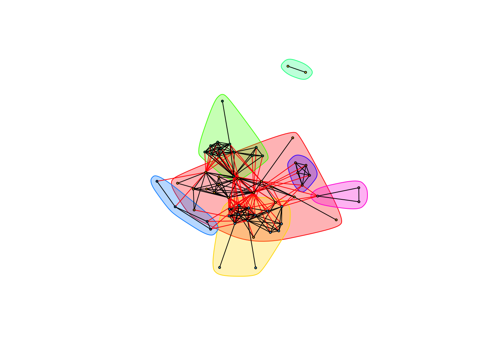
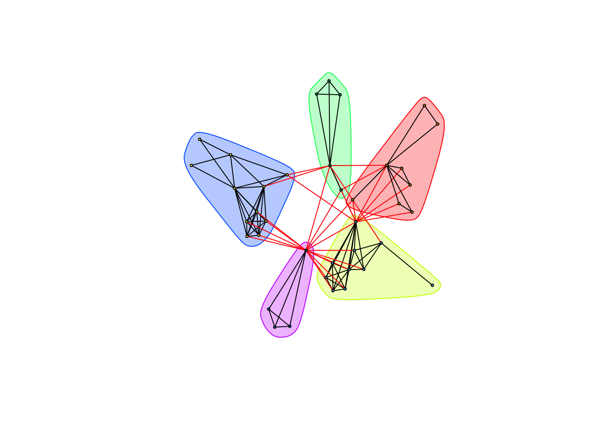
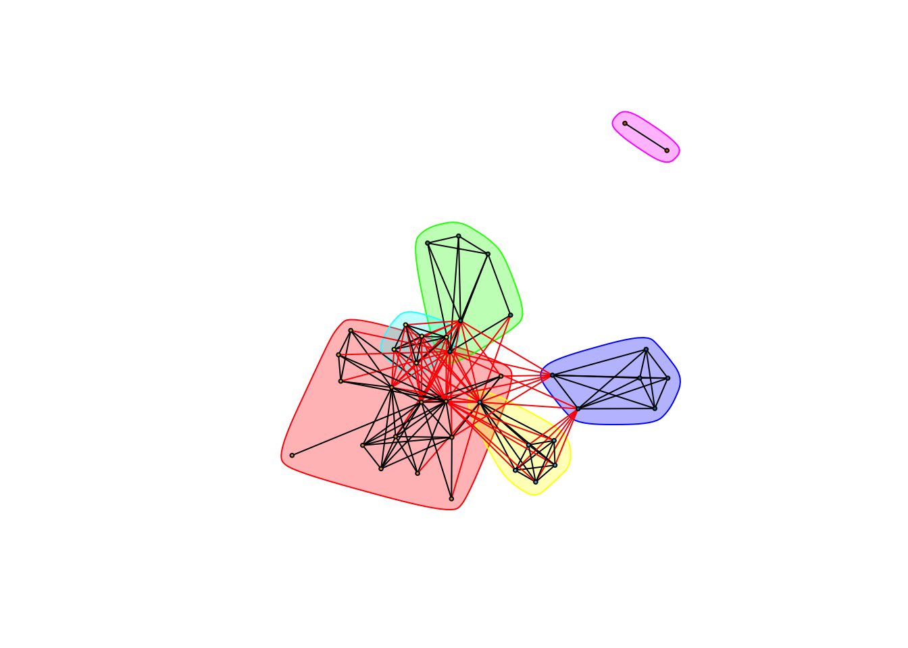
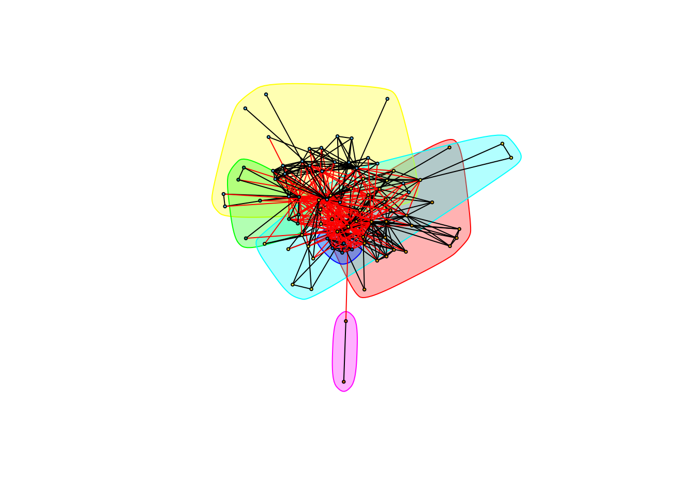

library(data.table, warn.conflicts = FALSE)
library(igraph, warn.conflicts = FALSE)taxa is the look-up table for the bacterial and yeast OTUs. As before, we remove any cyanobacteria and chloropast observations.
taxa <- data.table(read.delim("./data/bacteria-yeast/bacteria_yeast_classified_otus"))
taxa <- taxa[, -1]
colnames(taxa)<-c("OTU",colnames(taxa[,-1]))
nrow(taxa)## [1] 5521remove <- taxa[which(taxa[[4]] %in% c("Cyanobacteria", "Chloroplast")),]$OTU
taxa <- taxa[-c(remove),]Reading in the data set and separating out the yeast data. Yeast OTUs are labeled Y_OTU_xxx:
cooccurrence_data <- data.table(read.table("./data/bacteria-yeast/bacteria_yeast_cooccurrence",
col.names = c("treatment", "OTU_1", "OTU_2", "rho", "p")))
cooccurrence_data <- cooccurrence_data[p <= 0.05, -5]
complete_data <- cooccurrence_data[-c(which(apply(cooccurrence_data, 1, function(x) any(remove %in% x)))),]
yeast_otus <- taxa[which(startsWith(as.character(taxa[[1]]), "Y")), ]$OTU
yeast_cooccurrence <- cooccurrence_data[ OTU_1 %in% yeast_otus & OTU_2 %in% yeast_otus]
head(yeast_cooccurrence)## treatment OTU_1 OTU_2 rho
## 1: Bagged Y_OTU_0 Y_OTU_116 0.367480
## 2: Bagged Y_OTU_0 Y_OTU_122 0.411578
## 3: Bagged Y_OTU_0 Y_OTU_132 0.548760
## 4: Bagged Y_OTU_0 Y_OTU_136 0.461710
## 5: Bagged Y_OTU_0 Y_OTU_140 0.396878
## 6: Bagged Y_OTU_0 Y_OTU_145 0.426277Separating data into positive and negative networks.
The positive network:
yeast_positive <- yeast_cooccurrence[yeast_cooccurrence[['rho']] > 0]
head(yeast_positive)## treatment OTU_1 OTU_2 rho
## 1: Bagged Y_OTU_0 Y_OTU_116 0.367480
## 2: Bagged Y_OTU_0 Y_OTU_122 0.411578
## 3: Bagged Y_OTU_0 Y_OTU_132 0.548760
## 4: Bagged Y_OTU_0 Y_OTU_136 0.461710
## 5: Bagged Y_OTU_0 Y_OTU_140 0.396878
## 6: Bagged Y_OTU_0 Y_OTU_145 0.426277Note that there aren’t any negative cooccurrences between the yeast OTUs.
yeast_cooccurrence_negative <- yeast_cooccurrence[yeast_cooccurrence[['rho']] < 0]
head(yeast_cooccurrence_negative)## Empty data.table (0 rows) of 4 cols: treatment,OTU_1,OTU_2,rhoyeast_positive_exposed <- yeast_positive[treatment == "Exposed"]
yeast_positive_exposed <- yeast_positive_exposed[, -1]
gr_yeast_positive_exposed <- graph.data.frame(yeast_positive_exposed, directed = FALSE)
yeast_positive_exposed_communities <- cluster_fast_greedy(gr_yeast_positive_exposed,
weights = E(gr_yeast_positive_exposed)$rho)
plot(yeast_positive_exposed_communities, gr_yeast_positive_exposed,
layout = layout.fruchterman.reingold(gr_yeast_positive_exposed),
rescaled = TRUE,
vertex.size = 2,
vertex.label = NA
) Modularity:
modularity(gr_yeast_positive_exposed, membership(yeast_positive_exposed_communities))## [1] 0.4061909yeast_positive_caged <- yeast_positive[treatment == "Caged"]
yeast_positive_caged <- yeast_positive_caged[, -1]
gr_yeast_positive_caged <- graph.data.frame(yeast_positive_caged, directed = FALSE)
yeast_positive_caged_communities <- cluster_fast_greedy(gr_yeast_positive_caged,
weights = E(gr_yeast_positive_caged)$rho)
plot(yeast_positive_caged_communities, gr_yeast_positive_caged,
layout = layout.fruchterman.reingold(gr_yeast_positive_caged),
rescaled = TRUE,
vertex.size = 2,
vertex.label = NA
) Modularity:
modularity(gr_yeast_positive_caged, membership(yeast_positive_caged_communities))## [1] 0.4765045yeast_positive_bagged <- yeast_positive[treatment == "Bagged"]
yeast_positive_bagged <- yeast_positive_bagged[, -1]
gr_yeast_positive_bagged <- graph.data.frame(yeast_positive_bagged, directed = FALSE)
yeast_positive_bagged_communities <- cluster_fast_greedy(gr_yeast_positive_bagged,
weights = E(gr_yeast_positive_bagged)$rho)
plot(yeast_positive_bagged_communities, gr_yeast_positive_bagged,
layout = layout.fruchterman.reingold(gr_yeast_positive_bagged),
rescaled = TRUE,
vertex.size = 2,
vertex.label = NA
) Modularity:
modularity(gr_yeast_positive_bagged, membership(yeast_positive_bagged_communities))## [1] 0.3403384yeast_positive_all <- yeast_positive[, -1]
gr_yeast_positive_all <- graph.data.frame(yeast_positive_all, directed = FALSE)
gr_yeast_positive_all <- simplify(gr_yeast_positive_all,
edge.attr.comb = "mean")
yeast_positive_all_communities <- cluster_fast_greedy(gr_yeast_positive_all,
weights = E(gr_yeast_positive_all)$rho)
plot(yeast_positive_all_communities, gr_yeast_positive_all,
layout = layout.fruchterman.reingold(gr_yeast_positive_all),
rescaled = TRUE,
vertex.size = 2,
vertex.label = NA
)
Modularity:
modularity(gr_yeast_positive_all, membership(yeast_positive_all_communities))## [1] 0.3065254